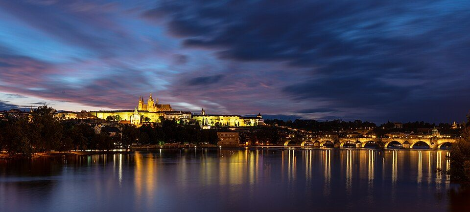
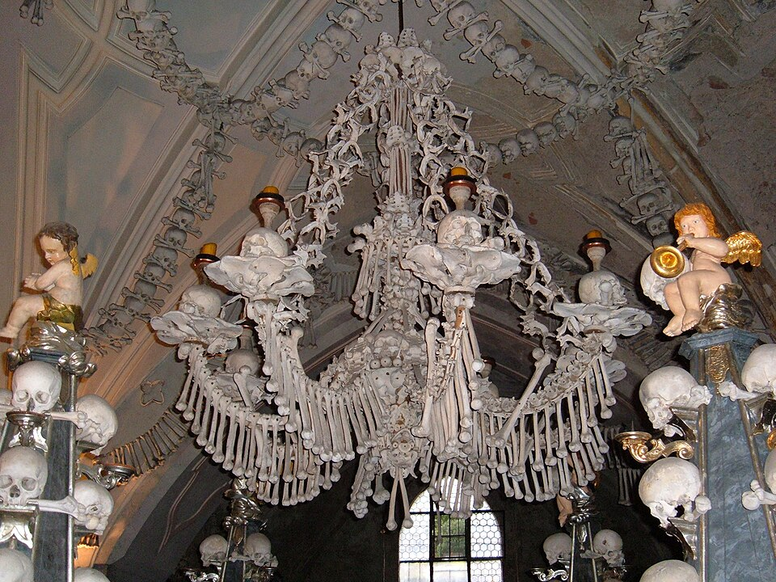
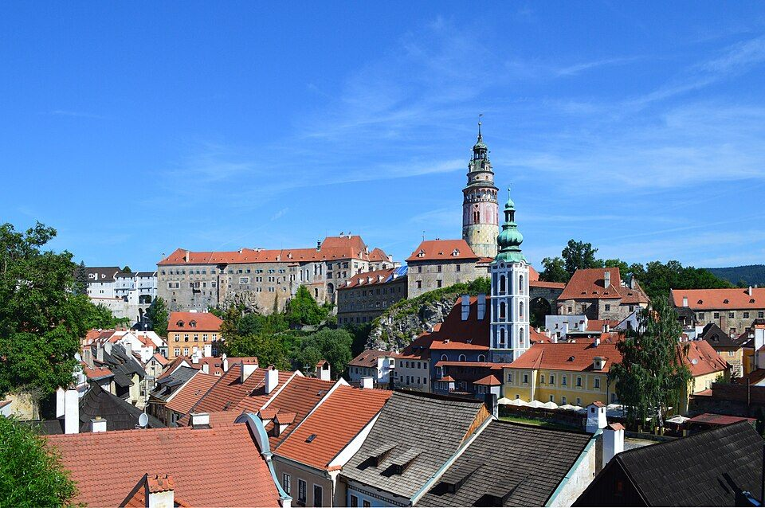

Czechia체코 Česko
중세의 거리와 정밀 제조업이 공존하는 나라
- Capital
- 프라하 (Praha)
- Language
- 체코어
- Currency
- 체코 코루나 (CZK)

프라하성과 카를교Prague Castle & Charles Bridge
쿠트나호라 세들레츠 해골 성당Sedlec Ossuary, Kutná Hora 프라우치츠카 브라나Pravčická brána, Bohemian Switzerland
프라우치츠카 브라나Pravčická brána, Bohemian Switzerland

체스키크룸로프Český KrumlovExplore Czechia
체코 더 알아보기
체코는 프라하의 고딕·바로크 건축으로 알려져 있지만, 공예와 산업기술이 모두 발달한 국가다. 블타바강을 가로지르는 카를교, 체스키크룸로프의 구시가지, 전통 유리공예는 문화 콘텐츠의 좋은 출발점이다. 다른 한편으로 자동차 제조와 엔지니어링은 지금의 체코를 이해하는 데 빠질 수 없다.


Latest updates
체코 최근 뉴스
-
피초 총리, 독일의 우크라이나 자금 요구를 블랙메일이라 비난…슬로바키아 연정은 의회 과반 흔들려
발칸인사이트 주간 정리에 따르면 피초 슬로바키아 총리는 메르츠 독일 총리의 요구를 블랙메일이라고 비난했습니다. 메르츠 총리는 2027년 이후 우크라이나 장기 자금 지원에 모든 EU 회원국이 참여해야 하며, 합의가 없으면 다음 7년 예산안을 막을 수 있다고 경고했다고 합니다.
-
체코 정부 로마 학교 5곳 폐쇄 추진·슬로바키아 연정 과반 상실 여진·헝가리 마자르 총리 예산 사용처 공개
FrontPages.EU가 인용한 세즈남 즈프라비에 따르면 바비시 총리 정부는 로마(집시) 학교 5곳을 폐쇄하고 다른 학교의 운영 방식을 크게 바꿀 계획입니다. 엑스팻츠닷체코는 콘네치나 유럽의회 의원이 공산당(KSČM)을 21년 만에 탈당했다고 전했습니다.
-
폴란드 헌법재판소 사태, 연정 파트너 PSL이 현직 재판관 전원 임기 종료 개헌안 제시…체코 중앙은행은 금리 4%로 인상
노트프롬폴란드에 따르면 11월 3일 정부 쪽 판사 8명이 헌법재판소 전원회의를 열어, 직무정지된 재판소장과 부소장 등을 정족수에서 빼는 방식으로 의결 정족수를 충족했다고 선언했습니다. 이 회의는 2027년 예산안을 채택하고 소장에 대한 징계 절차를 진행했으며, 나브로츠키 대통령 측은 이를 쿠데타라고 비판했습니다.